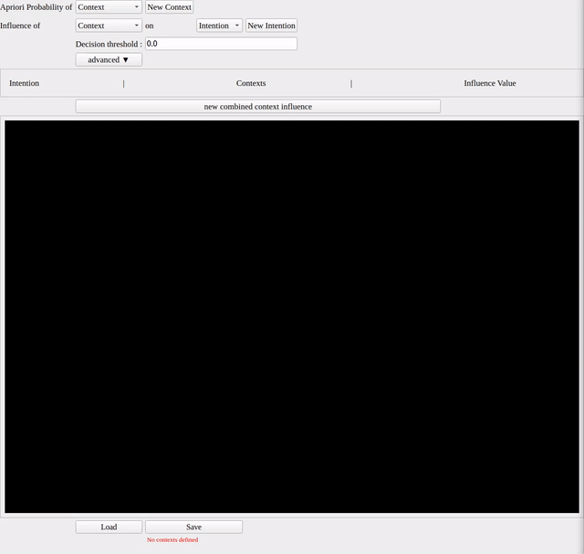

CoBaIR is a python library for Context Based Intention Recognition.
It provides the means to infer an intention from given context.
An intention is a binary value e.g. repair pipe that can either be present or not. Only one intention can be present at a time.
Context on the otherhand can have multiple discrete instantiations e.g. weather:sunny|cloudy|raining.
If context values are continuous, discretizer functions can be used to create discrete values.
From the inferred intention in a HRI scenario the robot can perform corresponding actions to help the human with a specific task.
Publications
For a more in-depth explanation consult the following papers:
Install
CoBaIR needs Python >= 3.10, the web GUI needs Python >= 3.11. Install it with the extras you need:
pip install "cobair[all]"
| extra | contains |
|---|---|
cobair |
the config model only (pyyaml) |
cobair[infer] |
inference with the Bayesian net (pgmpy, bnlearn), needed for cobair.bayes_net |
cobair[qt] |
the Qt configurator (PyQt5, pyqtgraph) |
cobair[web] |
the web GUI (Reflex, Python >= 3.11) |
cobair[all] |
everything above (Python >= 3.11, use cobair[infer,qt] on Python 3.10) |
You can install the library from your local copy after cloning this repo with pip using pip install ".[all]"
or install the newest unreleased features from the main branch with
pip install "cobair[all] @ git+https://github.com/dfki-ric/CoBaIR.git@main"
Usage
from cobair.model import Config
from cobair.infer import Inference
config = Config.load('small_example.yml')
inference = Inference(config)
intention, decision_threshold, probabilities = inference.infer({'speech commands': 'pickup'})
cobair.model.Config holds the scenario and has methods to edit, validate, load and save it.
cobair.infer.Inference infers the intentions for given evidence. See the API documentation.
The 4.x API (from CoBaIR.bayes_net import BayesNet, load_config) still works until 6.0.0, but raises a
DeprecationWarning.
Known Issues
On some Linux Distros there seems to be a problem with a shared library. This Solutions suggests to export LD_PRELOAD=/usr/lib/x86_64-linux-gnu/libstdc++.so.6 which works on Ubuntu 22.04.
Web GUI
The web GUI is the easiest way to create and test a configuration:
pip install "cobair[web]"
cobair-web
It opens http://localhost:8000 in your browser, see the Web GUI documentation.

Qt Graphical User Interface

The Qt configurator is kept in maintenance mode (no new features).
Install it with pip install "cobair[qt]" and start it with
cobair-qt
if you want to start the GUI with a loaded config use
cobair-qt -f config.yml
From a source checkout, python start_configurator.py [-f config.yml] does the same.
Tutorial
For a step-by-step guide on how to use CoBaIR, check out our Tutorial.
Documentation
The Documentation can be accessed on https://dfki-ric.github.io/CoBaIR/
Bayesian Approach
In the bayesian approach CoBaIR uses a two-layer Bayesian Net of the following structure.
Config Format
Configs will be saved in yml files. For convenience there is a configurator which can be started with
cobair-qt
Bayesian Approach
The configuration file for a two layer bayesian net for context based intention recognition follows the given format:
# List of contexts. Contexts can have different discrete instantiations.
# Number of instantiations must be larger than 1.
# For all discrete instantiations a prior probability must be given(sum for one context must be 1)
contexts:
context 1:
instantiation 1 : float
.
instantiation m_1 : float
context n:
instantiation 1 : float
.
instantiation m_n : float
# List of intentions. Intentions are always binary(either present or not)
# For every intention the context variables and their influence on the intention is given
# [very high, high, medium, low, very low, no] => [5, 4, 3, 2, 1, 0]
intentions:
intention 1:
context 1:
instantiation 1: int # one out of [5, 4, 3, 2, 1, 0]
.
instantiation m_1: int # one out of [5, 4, 3, 2, 1, 0]
context n:
instantiation 1: int # one out of [5, 4, 3, 2, 1, 0]
.
instantiation m_n: int # one out of [5, 4, 3, 2, 1, 0]
intention p:
context 1:
instantiation 1: int # one out of [5, 4, 3, 2, 1, 0]
.
instantiation m_1: int # one out of [5, 4, 3, 2, 1, 0]
context n:
instantiation 1: int # one out of [5, 4, 3, 2, 1, 0]
.
instantiation m_n: int # one out of [5, 4, 3, 2, 1, 0]
# decision_threshold is a float value between 0 and 1 which decides
# when an intention should be considered in inference.
# Probability must be greater than decision_threshold.
decision_threshold: float
How to contribute
If you find any Bugs or want to contribute/suggest a new feature you can create an Issue or a Pull Request or contact me directly via adrian.auer@dfki.de. See CONTRIBUTING.md for the development and versioning workflow.
Run tests
Tests are implemented with pytest.
All dependencies are declared in pyproject.toml; the development tools are
dependency groups
(test, docs, lint, e2e), which need pip >= 25.1. Install the test dependencies with
pip install --group test -e ".[all]"
Then you can run
python -m pytest tests/
You can as well see the test report for a specific commit in the Tests workflow runs (artifact test-reports-py<version>)
Coverage
If you want to see coverage for the tests you can run
coverage run -m pytest tests/
Use
coverage report
or
coverage html
You can as well see the coverage for a specific run in the job summary of the Tests workflow runs
To show results of the coverage analysis.
Code quality
The Quality workflow runs on every Pull Request into main and on pushes to main and counts
ruff linting issues and the docstring coverage measured by
interrogate. Both tools are configured in pyproject.toml and pinned in its
lint dependency group. Run them locally with
pip install --group lint
ruff check .
interrogate -c pyproject.toml .
The workflow works as a ratchet against .github/quality-baseline.json: it fails if the number of ruff issues goes up
or the docstring coverage goes down. If the numbers improved, lower ruff_issues / raise doc_coverage in the
baseline in the same Pull Request to lock the improvement in. The badges at the top of this README are only
committed by the workflow on main; on other branches and Pull Requests the numbers are shown in the job summary.
The test coverage badge comes from the coverage job of the Tests workflow.
It combines the coverage of the cobair package from the Python 3.12 tests with all extras and from the end-to-end tests,
including the cobair-web server they start (configured in [tool.coverage.*] of pyproject.toml). It is only
shown, not enforced. Measure it locally with
pip install -e ".[all]"
coverage run -m pytest tests/ && coverage combine && coverage report
Build docu
Documentation is implemented with the material theme for mkdocs.
Dependencies
Install all dependencies for building the docu with
pip install --group docs -e ".[infer,qt]"
Build
Build the docu with
mkdocs build
The documentation will be in the site folder.
Authors
Adrian Auer & Arunima Gopikrishnan
Citation
If you use CoBaIR please consider citating it.
@inproceedings{lubitz2023cobair,
title={Cobair: A python library for context-based intention recognition in human-robot-interaction},
author={Lubitz, Adrian and Gutzeit, Lisa and Kirchner, Frank},
booktitle={2023 32nd IEEE International Conference on Robot and Human Interactive Communication (RO-MAN)},
pages={2003--2009},
url={https://ieeexplore.ieee.org/document/10309581/},
doi={10.1109/RO-MAN57019.2023.10309581},
year={2023},
month=aug,
organization={IEEE}
}
@inproceedings{pub12351,
author = {Auer, Adrian and Arriaga, Octavio and Hassan, Teena and Hoyer, Nina and Kirchner, Elsa Andrea},
title = {A Bayesian Approach to Context-based Recognition of Human Intention for Context-Adaptive Robot Assistance in Space Missions},
booktitle = {Proceedings of SpaceCHI 2.0 - Human-Computer Interaction for Space Exploration - A Workshop at CHI 2022. SpaceCHI 2.0: Human-Computer Interaction for Space Exploration (SpaceCHI 2.0-2022), located at ACM CHI 2022, May 1-1, New Orleans, LA, United States},
year = {2022},
month = {5},
publisher = {ACM}
}
Funding
CoBaIR is currently developed in the Robotics Group of the University of Bremen, together with the Robotics Innovation Center of the German Research Center for Artificial Intelligence (DFKI) in Bremen. CoBaIR has been funded by the German Federal Ministry for Economic Affairs and Energy and the German Aerospace Center (DLR). CoBaIR been used and/or developed in the KiMMI-SF project.